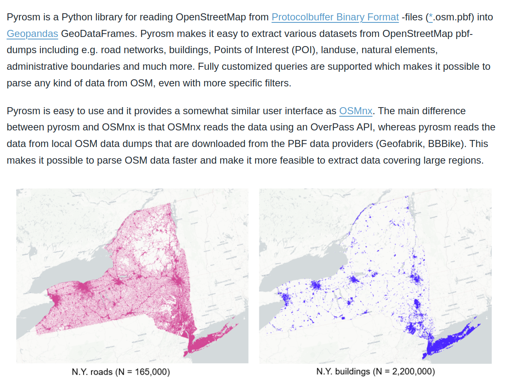

Lab 9 - Geospatial Semantics II#
Th 28.11.2024 15:00-17:00
0. (Optional) Retrieving Data from OSM with Pyrosm#

Retrieving Data#
from pyrosm import OSM, get_data
vienna = get_data("wien") # Download data for Vienna
osm = OSM(vienna) # Initialize the reader object for Vienna
vienna_poi = osm.get_pois() # Extract the POIs in Vienna from OSM
In the first command, we downloaded the data for “wien” using the get_data function. This function in fact automates the data downloading process and stores the data locally in a temporary folder. The next step was to initialize a reader object called osm. The OSM() function takes the filepath to a given osm.pbf file as an input. Notice that at this point we actually didn’t yet read any data into DataFrame.
OSM contains a lot of information about the world, which is contributed by citizens like you and me. In principle, we can retrieve information under various themes from OSM using the following functions.
road networks –> osm.get_network()
buildings –> osm.get_buildings()
Points of Interest (POI) –> osm.get_pois()
landuse –> osm.get_landuse()
natural elements –> osm.get_natural()
boundaries –> osm.get_boundaries()
1. Read in Data#
The dataset we downloaded from moodle is preprocessed from the results of osm.get_pois().
import pandas as pd
df = pd.read_csv('vienna_poi.csv')
## removes rows from if the 'amenity' column contains missing values
df.dropna(subset=['amenity'], inplace=True)
df.head()
2. Aggregate Data#
## group by postcode and aggregate values in the `amenity` column into a list
df_group = df.groupby('postcode')['amenity'].agg(list).reset_index()
df_group
After aggregating the data, we need to prepare a document list (called corpus here) as the input to the model. This corpus is a list of list, where the inner list is a place type list composing the document.
corpus = list(df_group['amenity'])
corpus
3. Word2Vec#
With such a corpus, we then can train the neural network to learn the embedding for words in the corpus based on their use in the document. All the detailed processes (e.g., initializing, sampling, optimization, etc.) are encapsulated in the function called Word2Vec provided by gensim’s models module (it also includes other advanced NLP models such as ldamodel).
from gensim.models import Word2Vec
## train the model
model = Word2Vec(corpus, min_count=1, vector_size=100, workers=3, window =3, sg = 1)
Use conda install -c conda-forge gensim or pip install gensim if you cannot import gensim
For the full documentation of Word2Vec, please check it official webpage: https://radimrehurek.com/gensim/models/word2vec.html. In this example, you will see in the parameters corpus, the input:
min_count, if the frequency of a word is less than it, it will not be considered in the model;
vector_size, dimensionality of the word embedding vector;
workers, the number of worker threads to train the model (it depends on your systems capability);
window, maximum distance between the current and predicted word (define the length of the context);
sg, training algorithm: 1 for skip-gram; 0 for CBOW (Continuous Bag of Words).
How to determine these parameters sometimes depends on modeler’s experience as well as the experiment results. In general Machine Learning (ML)/Deep Learning (DL) field, scientists usually conduct a lot of experienment in order to tune the model to its best performance.
## with the trained model, we can see the word embedding of any word (place type here)
## wv is short for word vector
model.wv['restaurant']
## compute the (semantic) simiarity between words (place types)
sim_restaurant_cafe = model.wv.similarity('restaurant', 'cafe')
sim_restaurant_cafe
sim_cafe_bank = model.wv.similarity('cafe', 'bank')
sim_cafe_bank
We can also use the built-in function most_similar() to get the most similar word to the target:
similar_words = model.wv.most_similar('restaurant')[:5]
similar_words
similar_words = model.wv.most_similar('doctors')[:5]
similar_words
4. Doc2Vec#
Similar to Word2Vec, we can also compute the document embedding with Doc2Vec.
from gensim.models import Doc2Vec
from gensim.models.doc2vec import TaggedDocument
# Convert DataFrame to TaggedDocument format
tagged_data = []
for idx, row in df_group.iterrows():
words = row['amenity']
tags = row['postcode']
tagged_data.append(TaggedDocument(words=words, tags=[str(tags)]))
tagged_data
model = Doc2Vec(min_count=1, vector_size=100, window=3, workers=3)
model.build_vocab(tagged_data)
model.train(tagged_data, total_examples=model.corpus_count, epochs=10)
similarity_score = model.dv.similarity('1010', '1070')
similarity_score
similarity_score = model.dv.similarity('1010', '1190')
similarity_score
5. Submission#
Feel free to adjust the parameters, explore Word2Vec and Doc2Vec with different place types and districts.
Write a few sentences whether the results make sense to you:
…
and submit the .ipynb file on Moodle.